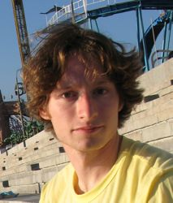

{kind=link}

Jonathan M. Bloom
Moore Instructor / NSF Postdoctoral Fellow
Department of Mathematics
Massachusetts Institute of Technology
jbloom => math.mit.edu
Research Interests:
Low-dimensional topology and geometry, knot theory, Morse theory, monopole Floer homology, Khovanov homology, Heegaard Floer homology.
Publications:
The combinatorics of Morse theory with boundary, Proceedings of 19th Gokova Geometry-Topology Conference (2013), p. 44-88.
A link surgery spectral sequence in monopole Floer homology, Advances in Mathematics, doi:10.1016/j.aim.2010.10.014
Odd Khovanov homology is mutation invariant, Mathematical Research Letters 17 (2010), no. 1, p.1-10.
Dissertation:
Monopole Floer Homology, Link Surgery, and Odd Khovanov Homology
In Preparation:
The monopole category and invariants of bordered 3-manifolds (with J. Baldwin):
we extend monopole Floer homology to the framework of 2+1+1 TQFT by constructing a finitely-generated A-infinity category C(S) for a surface S,
a gauge-theoretic analogue of the Fukaya category of Sym^g(S).
The Künneth principle in Floer homology (with T. Mrowka and P. Ozsváth).
Khovanov homology and U.
Slides:
The monopole category (AMS Joint 2014, LaTop)
Künneth Figures
Moscow State seminar
Knots in Washington Figures
Public Workshop:
Knots for Novices (Cambridge Science Festival 2011/2012, MIT Open House)
Statistics Education:
HHMI Science Education Seminar
Renovating Introductory Probability and Statistics at MIT (AMS slides)
18.05 course structure and goals
18.05 photos
Knots and Dynamics:
Knots and Dynamics, original undergraduate research seminar
Instructor:
18.05: Intro. to Probability and Statistics, co-instructor Jeremy Orloff, Spring 2014, MIT
18.05: Intro. to Probability and Statistics, co-instructor Jeremy Orloff, Spring 2013, MIT
Knots and Dynamics (Undergraduate Seminar), Spring 2009, Columbia University
Calculus IV,
Summer 2008, Columbia University
Calculus II (Math Xb), Spring 2006, Harvard University
Calculus I (Math Xa), Fall 2005, Harvard University
Mater Spei College, Summer 2004, Francistown, Botswana
Colegio Franco-Inglés, Summer 2002, Viña del Mar, Chile
Ross Mathematics Program, Summer 2001, Ohio State University
Teaching Assistant:
18.05: Intro. to Probability and Statistics, Jeremy Orloff, Spring 2012, MIT
18.03: Differential Equations, David Jerison, Spring 2011, MIT
Modern Algebra II, Dave Bayer, Fall 2009, Columbia University
Calculus III, Aaron Lauda, Fall 2009, Columbia University
Fixed-point Floer Homology REU, Tim Perutz and Robert Lipshitz, Summer 2009, Columbia University
Algebraic Topology I (Graduate), Tim Perutz, Fall 2008, Columbia University
Modern Geometry II (Graduate), Michael Thaddeus, Spring 2008, Columbia University
Modern Geometry I (Graduate), Michael Thaddeus, Fall 2007, Columbia University
Theory and Practice of Teaching Number Thoery, John Boller, Summer 2003, Harvard
University
Theoretical Linear Algebra and Multivariable Calculus (Math 23a), John Boller, Fall
2001, Harvard University
Consultant:
Law and Order: SVU, Hothouse, Season 9. (clip)